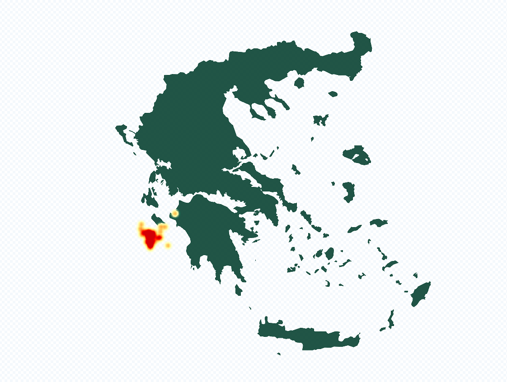

Scrollverhaal met voorbeelden van GMD skillzz (opgedaan tijdens webcartografie lessen)
Nummer 1
Dit is een mislukte kaart die gemaakt is met kepler. Wat hier mis ging was dat de coordinaten in de geimporteerde excel sheet niet klopte. Vermoedelijk door een punt te gebruiken ipv een komma.
Nummer 2
De geweldige skyline van Manhatten gevisualiseerd met mapbox.
Nummer 3
Nog een kaart gemaakt met kepler. In deze kaart zijn lijnen te zien die vanuit amersfoort naar elk land ter wereld gaan.
Nummer 4
Dit is een kaart van Griekenland met een heatmap van aardbevingen.

Nummer 5
Een kaart gemaakt in Qgis. Vervolgens met een plugin is er een cartogram van gemaakt. Hierdoor zie je beter de verschillen tussen waarden.
Nummer 6
Nederland heeft wel bergen.
Nummer 7
Alweer een kepler kaart..? Ja deze is van studenten die aan de Aeres Hogeschool studeren. Je kunt hierop zien waar ze wonen.